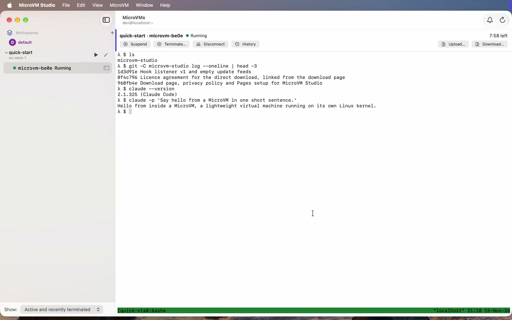

A Mac terminal for AWS Lambda MicroVMs
MicroVM Studio launches MicroVMs from workspaces you set up once, and gives each one a terminal on your Mac. Your repos are cloned, Claude Code is signed in, and the MicroVM is ready to work in.
Free. macOS 15 or later, Apple silicon or Intel. Runs in your own AWS account.

What it does
Workspaces
Save what a MicroVM starts with: its image, GitHub repos, sign-ins, secrets, setup commands and time limits. Launch one with a click.
Terminals
Every MicroVM opens in a terminal with split panes. Sessions are kept in tmux, so a dropped connection picks up where it left off.
Claude Code and Codex
Signed in for you through Anthropic, Amazon Bedrock or an API key, with your repos already cloned.
Images
Build images in your account from a starter recipe or your own Dockerfile. The image sets each MicroVM's memory and CPU.
Persistent /workspace
Keep
/workspaceon Amazon EFS, so your files outlive each MicroVM.Guardrails
See what is running and what it costs. Idle MicroVMs suspend, and the app warns before one reaches its time limit.
Walkthroughs
/workspace is still there after it is terminated and launched again. Follow along in the guide.What you need
- macOS 15 or later, on Apple silicon or Intel.
- An AWS account in a region with Lambda MicroVMs. AWS lists them on the Lambda MicroVMs page.
- An AWS sign-in: IAM Identity Center or an IAM user's access key. The app can save either as a profile.
Costs
MicroVMs, EFS file systems and the network resources the app creates bill to your AWS account. The app shows an estimate while MicroVMs run, and says what it will create before it creates anything.
Privacy
The app collects nothing and sends nothing to its author. It talks only to AWS, GitHub and its update feed. This website counts visits with Google Analytics, if you accept. See the privacy policy.
Licence and support
Free to use; the source isn't public. Using it means accepting the licence agreement. Report problems or ask questions in Issues.